A bathroom remodel has a reputation for going over budget and over schedule.
And it's usually because of planning gaps, not bad luck.
The projects that go smoothly tend to follow roughly the same sequence, in roughly the same order.
Here's that sequence, step by step.
Step 1: Find the Right Professionals Early
Getting multiple quotes and checking real references matters more for a bathroom remodel than almost any other home project, given how much can go wrong with plumbing and electrical work done poorly.
A contractor who asks you detailed questions about the plan is generally a better sign than one who agrees to everything immediately.
Finding them early, before you've locked in every material choice, means they can actually weigh in while there's still room to adjust.
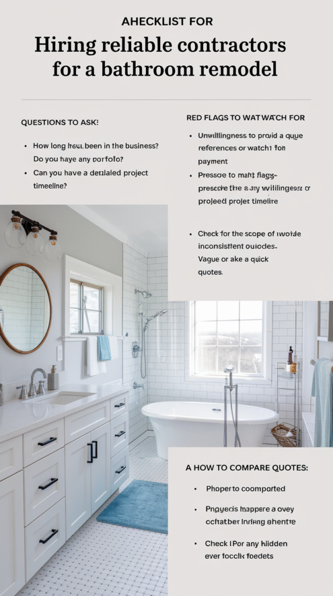
Step 2: Gather Inspiration Without Getting Lost in It
A focused folder of a dozen or so reference images communicates a clear direction to your contractor far better than an unlimited, ever-growing collection.
Narrowing inspiration down early also prevents a common trap: endlessly browsing new ideas instead of actually moving the project forward.
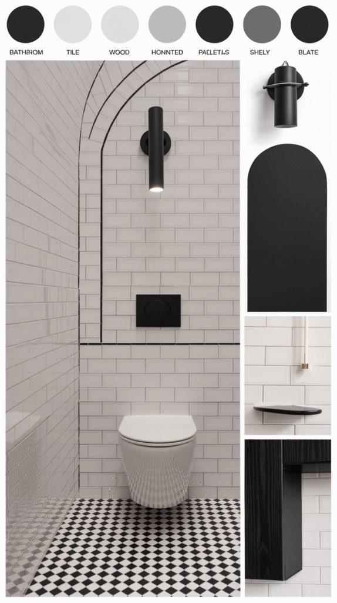
Step 3: Figure Out What You Actually Want
A clear list of what's actually broken, outdated, or missing, rather than a vague sense of wanting an upgrade, gives the whole project a real target.
This list also becomes your reference point for every later decision, keeping the scope from quietly expanding as the project goes on.
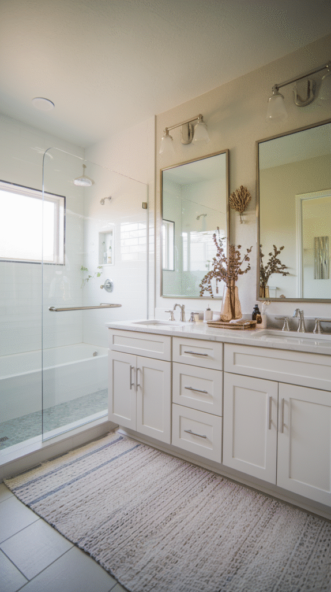
Step 4: Set a Realistic Budget
A budget that includes a genuine contingency, typically 10 to 20 percent above your estimated cost, absorbs the surprises that come up in nearly every remodel.
Pricing out the big-ticket items first, tile, fixtures, labor, gives you a much more realistic number than guessing at a total upfront.
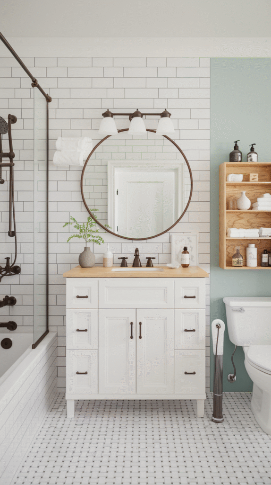
Step 5: Plan the Layout Carefully
Moving plumbing fixtures is one of the most expensive changes in any bathroom remodel, so it's worth confirming the layout is genuinely necessary before you commit to it.
A layout that keeps your existing plumbing lines, even with some compromise, often delivers most of the improvement for a fraction of the cost of a full reconfiguration.
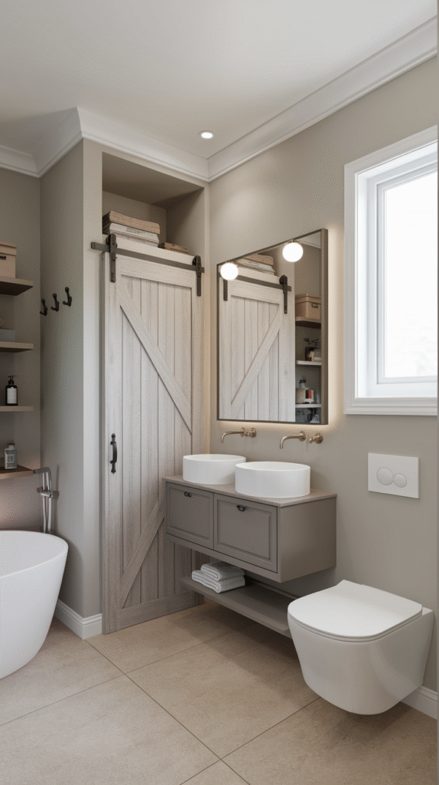
Step 6: Choose Materials That Won't Cause Regret
Durability and water resistance matter more here than in almost any other room. A beautiful material that can't handle bathroom humidity becomes an expensive mistake fast.
Order physical samples and view them in your actual bathroom's lighting. It avoids the common disappointment of a material looking different at home than it did in the showroom.
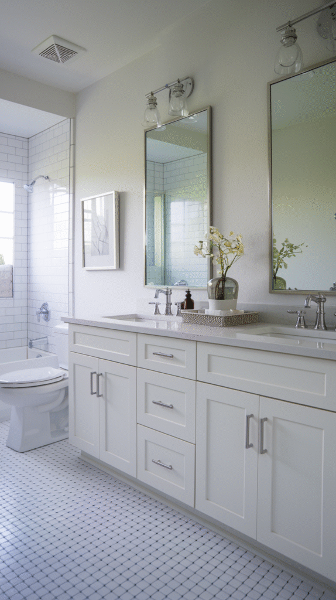
Step 7: Handle Permits and Approvals
Most structural, electrical, and plumbing changes require a permit, and skipping this step risks real problems at resale time, not just during the project itself.
A contractor experienced in local code typically handles this process, but it's worth confirming it's actually being done rather than just assuming.
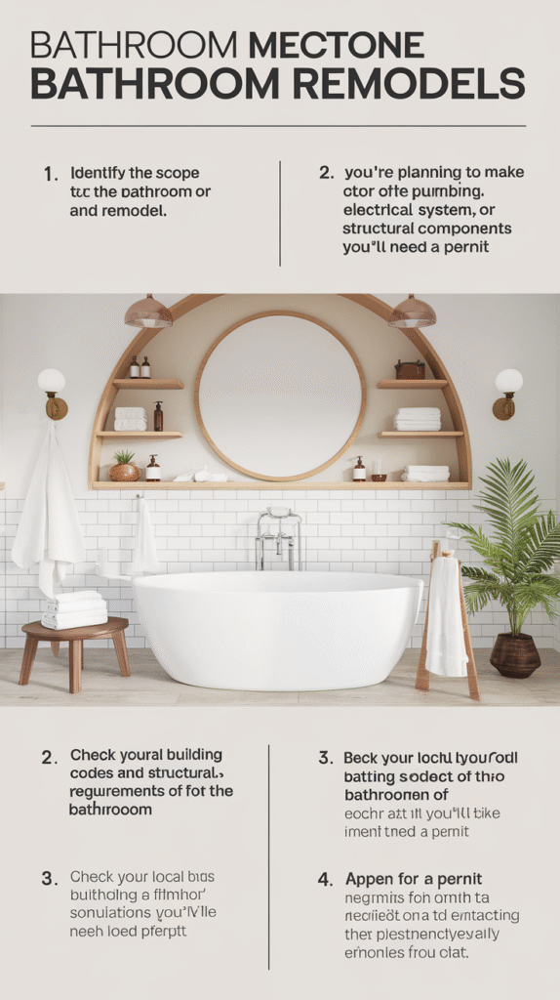
Step 8: Order Everything Before Demo Starts
Having materials and fixtures on hand before demolition begins avoids the project stalling halfway through while you wait on a backordered item.
This is one of the most commonly skipped steps, and one of the most disruptive to skip, since a bathroom without a toilet or shower is a daily problem, not a minor inconvenience.
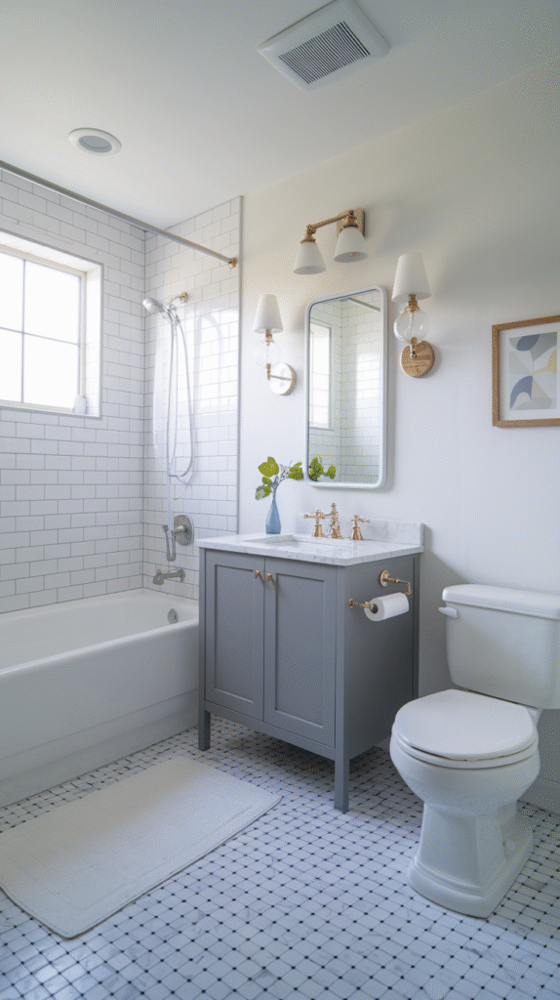
Step 9: Get Through Demo
Protect the surrounding areas of your home from dust and debris before demo starts. It saves considerable cleanup time afterward.
This phase often reveals hidden issues, water damage, outdated wiring, which is part of why that budget contingency from step 4 matters so much.
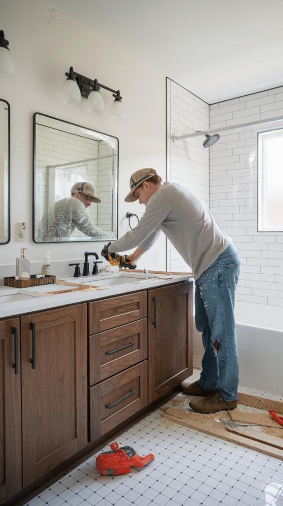
Step 10: Let Installation Happen
Plumbing and electrical rough-in happens first, followed by flooring, tile, and fixtures roughly in that order.
This is the phase where all your earlier planning pays off. A well-planned project moves through installation with far fewer surprises than one figured out on the fly.
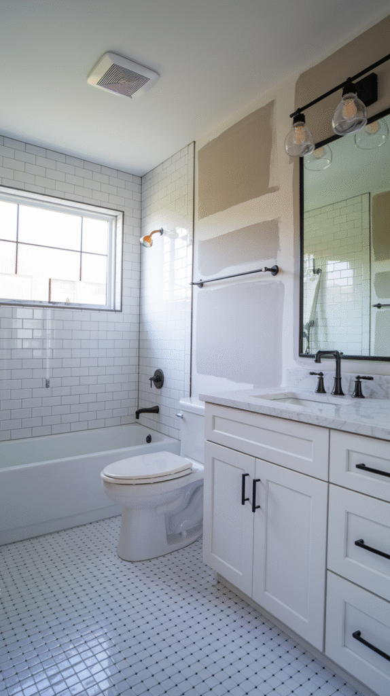
Step 11: Add the Finishing Touches
Hardware, mirrors, lighting fixtures, and final decor are what actually make your remodeled bathroom feel complete, even after all the major work is done.
This is also the most enjoyable phase of the whole process, arriving right after the most disruptive parts are already finished.
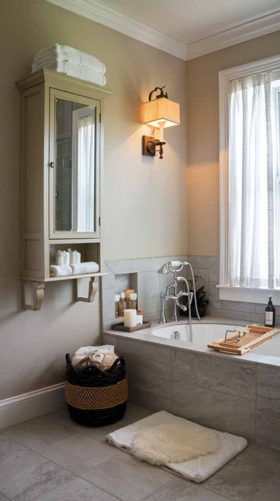
It's Won Before the First Wall Comes Down
None of these 11 steps need to happen quickly to go well.
The projects that go smoothly are the ones where the planning steps got real time and attention before any demo ever started.
A well-planned bathroom remodel is mostly won or lost before the first wall comes down.